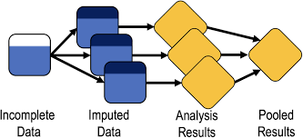

Missing Data in Health Studies
![]()
Happy 2026 dear readers! I hope you had a nice Xmas period and that you are ready for starting the upcoming year in the best way for you. I had a somewhat decent holiday break and am now ready to get back to business! January is usually very packed with stuff to do, especially in terms of meetings and planning. In any case, I wanted to begin the new year on my blog with an argument that links the current series of posts about medical statistics and my favorite research topic: missing data. I promise I keep things short, as this posts are not the place to discuss all details about missing data, but would still like to provide some useful information for those who are interested in the topic (or have to deal with it).
Perhaps you may be wondering why I chose the thumbnail picture of this post? Well, if you have not recognised the man shown, for the moment I can tell you that he, i.e. Donald Rumsfeld, was the US Defence Secretary who became famous for his legendary remarks, one of which I will use to explain a key concept linked to missingness! Interested? then go ahead and read the post!
Introduction
Missing data are common in health studies, both in the context of observational and experimental designs, and can have an important role in affecting the conclusions of a study depending on whether the appropriate methods have been used to deal with me. A critical aspect that can inform the choice of the method, among others, is to look whether missingness affects only the outcome variable, only exploratory variables, or both types of variables.
Let’s consider two examples:
Observational study: a cohort study of \(199\) cancer patients in palliative care, who were interviewed up to five times over a \(12\)-month period (King et al. 2008). The outcome variable of the study is some form of continuity of care score, and interest lies in investigating the association between the outcome and the following exploratory variables: supportive care need score, mental health problem, and cancer type. In this study, missingness affected both outcome and explanatory variables, with about \(50\%\) of the patients having complete data and with about \(30\%\) of assessments having missing outcome values.
Trial: a randomised clinical trial directed at evaluating the effectiveness of reducing weight in obese patients through a habit-formation behavioural intervention grounded on providing them with a series of \(10\) “top” tips (Beeken et al. 2017). The trial compared two groups: an intervention group receiving tips to reduce weight, and a control group receiving usual care. The primary outcome was weight change (Kg) measured at \(3\) weeks from baseline. In this study, missingness lead to a \(28\%\) dropout which caused people to not attend their follow-up weight visits.
Why missingness matters?
There are few important reasons one should be “afraid” of having non-negligible amount of missing data in their study. Among the most critical, there are: missing data negatively affects the power of the study; and all statistical methods rely on some assumptions about the missing values. Depending on the analytical approach chosen to analyse the data, the occurrence of missingness can lead to: biased estimates, biased standard errors (resulting in incorrect p-values and confidence intervals), inefficient estimates (no full use of the data). It is therefore important to try to understand the process responsible for making these data missing, often referred to as the missing data mechanism. In order to derive “valid” inference, we need to have a reasonable idea about the mechanism underlying the occurrence of unobserved values.
What is a missingness mechanism? well, this is the reason why I put the picture of Donald Rumsfeld in this post. We are going to use one of his many legendary remarks to help us understanding how a missingness mechanism can be defined and its implication for our analysis. Let’s directly start with the quote:
“As we know, there are known knowns. There are things we know we know. We also know there are known unknowns. That is to say we know there are some things we do not know. But there are also unknown unknowns. The ones we do not know we do not know.” (Rumsfeld 2002).
We can use the above expression and apply it to the concept of missing data mechanism, following Rubin’s nomenclature, as follows: the things we know, known knowns, are the observed data (complete records); the things we know we do not know, known unknowns, are the missing data that occur randomly (Missing Completely at Random - MCAR) or that can be fully explained using the observed data (Missing at Random - MAR); the things we do not know we do not know, unknown unknowns, are the missing data that cannot be explained based on the current information we have (Missing Not at Random - MNAR). We now go a bit more technical on how we can define these different categories of missingness mechanisms.
Different types of missingness mechanism
Under a MCAR mechanism, we can express the probability of having a missing value as unrelated to the value of the variable itself or to any other variables in the data. The missing values are simply missing by chance and therefore are a random sample of all subjects in the study. This mechanism would imply, for example, that patients who do not complete their questionnaires on average have the same score and covariate values of those who completed them. A typical example of this situation occurs when by mistake a page of the questionnaire was not printed or a laboratory blood sample is accidentally dropped.
Under a MAR mechanism, we can express the probability of having a missing value as related to an observed value of the variable itself (e.g. previously measured) or some other patient characteristics measured. In the second case, the mechanims is sometimes also referred to as a Covariate dependent missingness mechanism.
Under a MNAR mechanism, we can express the probability of having a missing value as related to the (missing) value itself or some other unobserved patient characteristics, even after controlling for other observed variables in the analysis. An example of this would occur when a patient’s physical need deteriorates at a level that forces the patient to not complete the questionnaire, or individuals with high blood pressures are more likely to have their blood pressure recorded compared to other individuals with the same age.
The importance of understanding the type of missingness mechanism at play is related to the fact that some assumptions are always required by statistical methods when analysing data affected by missingness. Typical test-based methods, e.g. t-tests or marginal models, assume MCAR, while likelihood-based methods, e.g. regression models, may assume MAR. However, none of the standard methods used in practice can be used to analyse the data under MNAR as they would lead biased estimates.
A key consequence of the violations of the assumptions about the missingness mechanism made by the chosen methods is to obtain biased estimates, loss in efficiency and power. Possible strategies to have some idea about the plausibility of a given type of mechanism include: look at missing data patterns, compare proportions and reasons of missing data by variable of interest, identify predictors of missingness by variable of interest, look at baseline imbalances among those individuals with and without observed outcomes (in trials).
Handling missing data in analyses
There are different possible strategies to handle missingness prior to the analysis stage of a study.
- Drop patients having several predictors missing.
- Drop predictors is these are missing for most patients.
- Drop patients with information missing on important factors, such as demographic variables.
Next, we need to define a strategy or method to handle the missing values at the analysis stage.
Complete Case Analysis (CCA)
CCA restricts the analysis to subjects with no missing data, therefore implicitly assuming that subjects with incomplete information are not systematically different from the completers. As a result, CCA can provide unbiased estimates if the completers are a random sample of the original full sample - it assumes a MCAR mechanism. Key disadvantages of CCA is that it ignores possible systematic differences between completers and incomplete cases; leads to standard errors that are generally larger because less information is used; gets biased estimates if the reduced sample is not a random sample of the original full sample.
In the context of MAR data, to obtain valid estimates using CCA, we have to include in the analysis the variables that are predictive of missingness. We can use, for example, logistic regression to identify predictors of missingness indicators: 0=observed, 1=missing. We can then include the identified predictors into the analysis as covariates. However, a possible drawback is that, in the presence of missing values in multiple variables, the need to explore missingness predictors for each variable can lead to a messy situation quite easily. In addition, when some missing covariate values occur, some for of “missing value imputation” is needed, which further complicates the analysis task.
Single Imputation (SI)
SI replaces a missing value with a given reasonable value, such as:
- Mean/mode of non-missing values for continuous/categorical variables
- best/worst value scenario
- baseline value
- last observed value (e.g. at the previous assessment)
There a important disadvantages in using SI methods to deal with missingness. In general, any SI approach assumes that the replaced or “imputed” value corresponds exactly to the true unobserved value, thus leading to the calculation of underestimated standard errors. In addition, some specific methods, such as last value carried forward, assume that the unobserved value remains constant from the point of attrition to study completion (for dropout), potentially causing considerable bias in the estimates when such assumption is violated.
Multiple Imputation (MI)
MI is one of the most advanced approaches to handle missingness and typically allows to obtain valid inferences under a MAR mechanism assumption, and essentially consists in combining results from a repeated use of single imputations.

We can break up the different steps forming MI into three distinct phases (Little and Rubin 2019):
- Imputation step: missing values are filled in \(k=1,\ldots,K\) times, with a value estimated by an appropriate imputation method.
- Analysis step: each of the \(K\) imputed values is separately combined with the observed data to generate \(K\) distinct imputed data sets, which are then separately analysed using a chosen approach.
- Pooling step: the \(K\) estimates of interest derived from the analyses of the imputed data sets are combined using Rubin’s rules to obtain a pooled estimate.
For example, consider two predictors \(x_1\) and \(x_2\) and one outcome \(Y\), with some values in \(x_1\) being missing. Then, following the MI approach, we impute \(x_1\) using the following model:
\[ x_1 = a+b_1y+b_2x_2 \] we can use the possible imputation model and the observed data to estimate the missing data after adding some random noise, e.g. \(\varepsilon \sim \text{Normal}(0,\sigma^2)\), and repeat the step several times \(K\). Once we generate \(K\) imputations for each missing value, we can analyse the \(K\) completed data sets (imputed+observed) in the usual way to obtain \(K\) estimates with corresponding standard errors. Next, we combine the parameter estimates by taking the average across all imputed data sets and calculate the standard error based on the within and between imputations variance. The specific formulae used to pool the \(K\) results together are known as Rubin’s rules.
Consider the \(E_1,\ldots,E_K\) estimates obtained from the analysis of \(K\) imputed data sets, each associated with their respective within-imputation variances \(W_1,\ldots,W_K\). Computation of the pooled estimate is relatively simple as it corresponds to the average across all \(K\) parameter estimates obtained from the analysis of the imputed data sets:
\[ E^{\star}=\frac{E_1+\ldots+E_K}{K}. \] The computation of the variance for the pooled estimate however requires a bit more work. First, we calculate the within-imputation variance component as
\[ W=\frac{W_1+\ldots+W_K}{K}, \] and the between-imputation variance component as
\[ B=\frac{(E_1-E^{\star})^2+\ldots+(E_K-E^{\star})^2}{K-1} \] to compute the total variance as
\[ T=W+(1+\frac{1}{K})B. \]
From the calculation of the pooled variance estimate we can then also obtain confidence intervals, e.g. through some approximation methods:
\[ \frac{(E^{\star}-E)}{\sqrt{T}} \sim t_{\nu}, \]
where \(\nu=(K-1)(1+\frac{W/B}{1+1/K})^2\). Confidence intervals for \(E\) are obtained from the \(t\) distribution with \(\nu\) degrees of freedom.
How many imputations?
In the past, general recommendations indicated a number between \(5-10\), with uncertainty in the results due to finite \(K\) that can be assessed via Monte Carlo error. More recently, the recommended number of imputations is approximately equal to the proportions of incomplete cases in the data (White and Carlin 2010).
Conclusions
It is important to realise that none of the above methods can be used to obtain valid results under MNAR, where more advanced analytic methods may be used in combination with external information. In addition, it should be noted that in practice it is never possible to distinguish between a MAR or MNAR situation unless the reasons for missingness is known for all missing data.
Despite its limitations, MI can be very useful in observational studies when explanatory variables are incomplete. In trials, instead, it is often the outcome which is incomplete. When no information can be gained through imputations, then there is no advantage in using MI compared to alternative approaches. In trials, MI can be used when additional information, e.g. in the form of “auxiliary variables”, can be incorporated into the imputation model. A possible example includes secondary outcomes which may be used as auxiliary variables to impute the primary outcome.
In general, a simple strategy revolves around:
- Identify predictors of missingness and perform a CCA, adjusting for said predictors.
- (if helpful) perform a sensitivity analysis using MI and compare the results with those from CCA.
It is always optimal to reduce the amount of missing data, starting from the design stage, through a good communication with patients, objective to follow-up everyone, make repeated attempts using different recall/contact methods, collect reasons for missingness and on possible predictors of missingness, adjust sample size for anticipated missing values.
I hope you enjoyed this little digression on missingness, which is always an amazing topic to discuss for me. Here I just kept things simple but, if interested, you are welcomed to explore my website under the “missing data” section to see some of the most popular approaches used in the statistical literature to handle missingness. Content warning, there might be some advanced statistics involved!